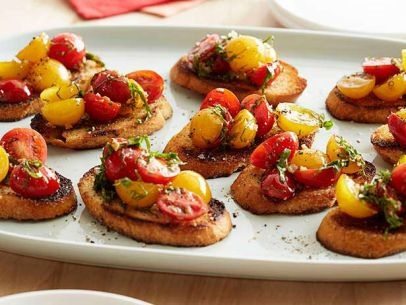

Popular throughout Spain, tapas are festive and delicious appetizers and snacks that are perfect for get-togethers or summer dinner parties. These tapas are delicious, easy, and fun to make.
Ingredients
- 4 tablespoons olive oil
- 5 cloves garlic, finely minced
- 1 pint red grape tomatoes, halved lengthwise
- 1 pint yellow grape tomatoes, halved lengthwise
|
- 1 tablespoon balsamic vinegar
- 16 whole fresh basil leaves, plus more as needed, chiffonade
- Salt and freshly ground black pepper
- 1 whole baguette or crusty loaf
|
|
 |
Method
- In a small skillet, heat the oil over medium-high heat. Add the garlic and stir, lightly frying for about a minute, removing before the garlic gets too brown (it can be golden). Pour the garlic and oil into a mixing bowl and allow to cool slightly.
- Add the red and yellow tomatoes, balsamic and basil to the bowl. Sprinkle with salt and pepper. Toss to combine, and then taste and add more basil if needed, and more salt if needed (don't over salt, though!) Cover and refrigerate for an hour or two if you have the time.
- Cut the baguette into diagonal slices to allow for the most surface area possible. Grill the bread on both sides.
- To serve, give the tomato mixture a final stir, and then spoon generously over the slices of bread. Serve on a big platter as a first course or appetizer.
|